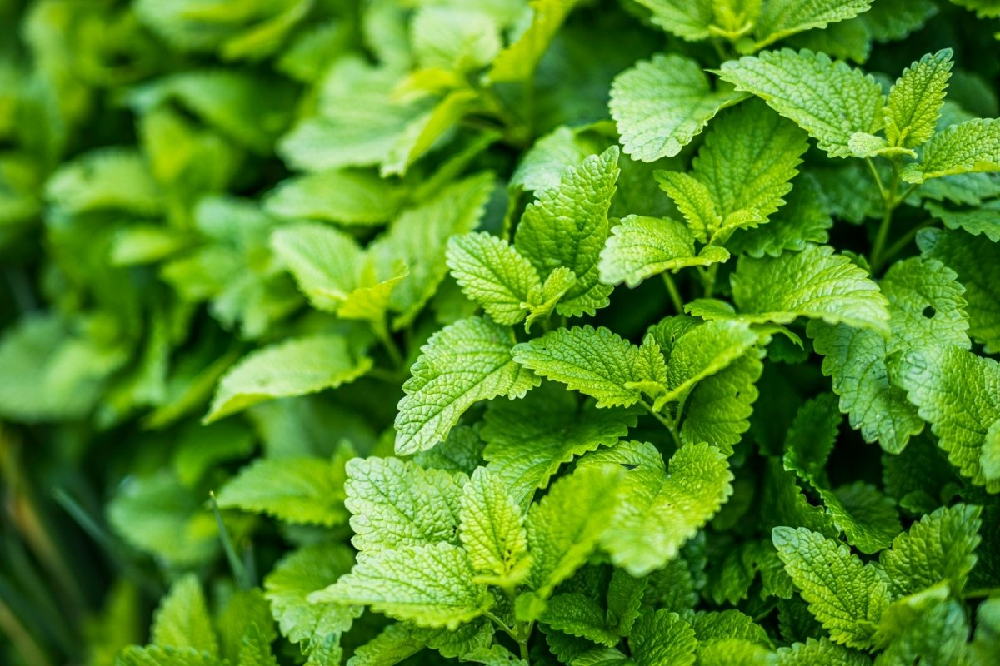

La hierbabuena pertenece al grupo familiar de las labiadas y es fanerógama, lo que significa que florece y lo hace con brotes rojos. Éstas suelen morir rápido, pero sus tallos son muy resistentes alcanzando hasta 50 cm de altura.
La hierbabuena disminuye la acidez y fomenta la buena digestión, por activar la producción de bilis y optimizar las funciones digestivas. Combate el dolor de cabeza. Mitiga el estrés y la ansiedad. Actúa como antiséptico, reduciendo el crecimiento de bacterias y amebas en el tracto digestivo.
¿Cuánto hay que regar la hierbabuena? Resultado de imagen de riego de la hierbabuena Colócala en una zona protegida del sol directo y riégala a diario si es invierno o dos veces al día en verano.
|  |
|
|